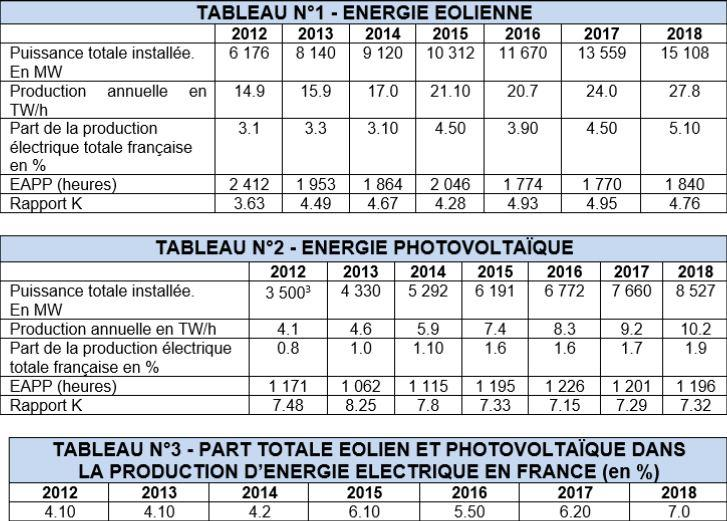
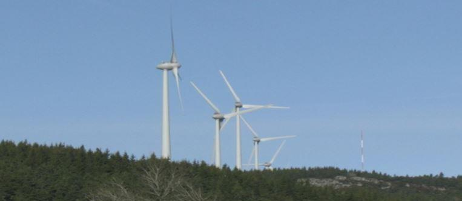
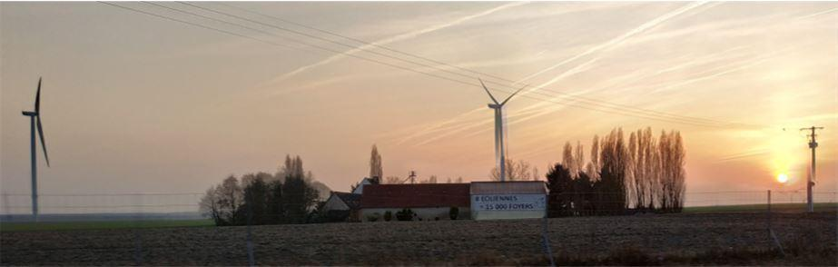
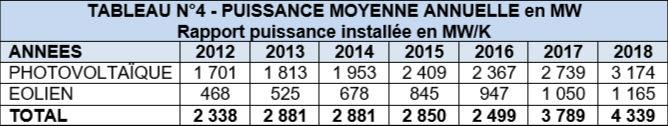
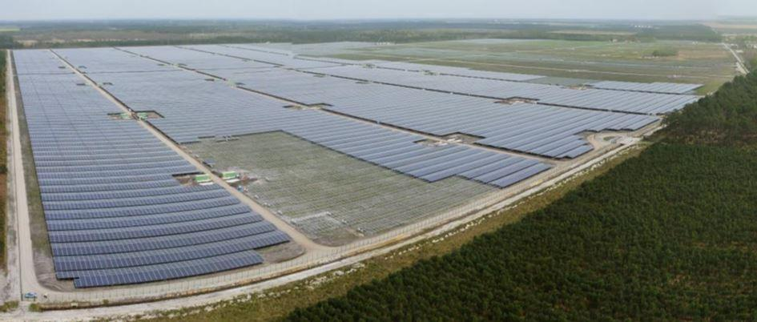
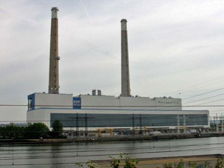
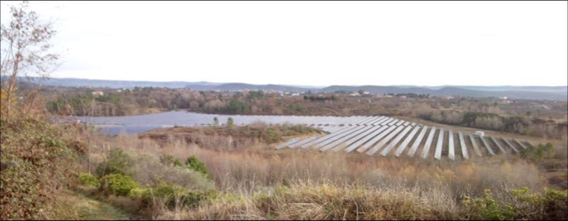
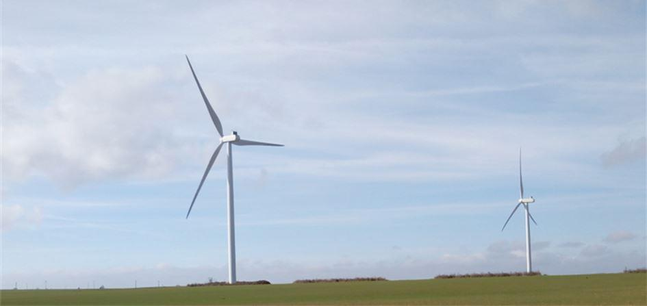

Déjà quelque peu abordé dans « Méthode », l’affaire des énergies renouvelables tant promue en France depuis au moins une décennie, mérite assurément que l’on s’y arrête à nouveau, juste histoire de faire le point…
Au nom de la transition énergétique, sous l’impulsion des différents gouvernements, l’installation tant d’éoliennes, tant de panneaux solaires s’est poursuivie à un rythme soutenu, essentiellement désormais sous forme de parcs et de centrales solaires de plusieurs hectares, voire en toitures de bâtiments industriels.
Avec le recul du temps, il est intéressant d’observer les divers éléments issus des statistiques officielles et naturellement, d’en tirer ainsi les conclusions en se limitant uniquement à l’énergie électrique d’origine éolienne et à celle d’origine photovoltaïque. Les tableaux ci-dessous (N°s 1 à 4) sont particulièrement significatifs de la situation.1 Préalablement et pour mémoire, on rappellera ce qui suit :
- EAPP : Un sigle de l’auteur de cet article mais qui reprend en partie des termes déjà régulièrement utilisés par EDF ou RTE. Il s’agit simplement de l’Equivalent Annuel Pleine Puissance, autrement dit du nombre annuel d’heures durant lequel le générateur (quel qu’il soit) doit fonctionner à pleine puissance pour produire la quantité d’électricité relevée. L’EAPP s’obtient en divisant la production annuelle d’énergie électrique par la puissance installée, évidemment en utilisant les mêmes unités.
- Rapport K = Heures annuelles divisée par l’EAPP ce qui correspond au rapport entre une année calendaire complète, soit 8760 heures et l’EAPP. Le résultat donne la valeur par laquelle il convient de diviser la puissance installée pour arriver à la puissance continue nécessaire pour produire la quantité d’énergie électrique relevée.
En résumé : d’un côté l’EAPP conduit au nombre d’heures, de l’autre côté le rapport K conduit à la puissance nécessaire, l’un comme l’autre pour fournir la quantité d’énergie relevée.
Exemple pour l’éolien en 2018 (dernière colonne du tableau N°1) :
8760 h (année calendaire) : 1840 (EAPP) = 4.76. Cela signifie que la puissance réelle continue pour produire 27.80 TW/h est donc de 15 108 MW (puissance installée) : 4.76 = 3 174 MW
À travers ce petit calcul, on voit à nouveau immédiatement l’importante différence qui existe entre la puissance du parc considéré (éolien, photovoltaïque…) et la réalité purement productrice d’énergie. Ce n’est évidemment pas la même chose !
Compte tenu de leur fonctionnement aléatoire, en matière d’éolien comme de photovoltaïque il ne faut donc pas parler de puissance installée mais de production d’énergie électrique, seule valeur qui intéresse le pays considéré et in fine : le consommateur concerné.
En effet, rien ne sert d’avoir, par exemple, 150 000 MW de puissance installée si cette dernière ne produit pas grand-chose.
Le tableau N° 4 ci-dessous se propose cette fois d’indiquer l’équivalent total des puissances moyennes résultant du fonctionnement des énergies éoliennes et photovoltaïque. C’est-à-dire que les valeurs ci-dessous correspondent à la puissance totale installée divisée par le coefficient K. En quelque sorte, cela revient à considérer une puissance moyenne annuelle (ou utile) sur laquelle le consommateur, quel qu’il soit, pourrait compter, laquelle, seule, permet de produire la quantité d’énergie indiquée dans les tableaux N°s 1 et 2.
PUISSANCE INSTALLÉE ET PRODUCTION D’ÉNERGIE ÉLECTRIQUE
À nouveau et en insistant quelque peu au risque de se répéter… il ne faut donc pas confondre la puissance installée avec la production réelle d’énergie électrique qui n’a rien à voir avec cette première puisque dépendant du temps de fonctionnement et du rendement énergétique du générateur.
La puissance installée peut aisément se révéler comme un argument commercial alors que la production d’énergie correspond à ce qui intéresse réellement le consommateur et pas autre chose. Pris parmi bien d’autres, les deux exemples suivants en constituent une parfaite illustration.
Suivant les publicités relevées, en Ardèche le parc éolien installé sur la commune de Coucouron affiche 73.50 MW (73 500 kW) ce qui peut alimenter 80 000 habitants. En divisant 73 500 par 80 000, on en déduit alors que cela représente 0.919 kW (919 W) par personne. Un foyer comptant en moyenne 4 membres, un tel résultat est évidemment séduisant puisque cela atteint 3.675 kW (3 675 W) pour l’ensemble du logement, uniquement grâce au vent, source inépuisable.
Cependant, revenant à la réalité des choses si maintenant on considère le rapport K pour 2018, soit 4.76 (dernière ligne du tableau N°1), la puissance moyenne annuelle utile devient alors 15.638 MW (15 638 kW) : 4.76 (K), ceci pour 80 000 habitants ce qui représente 0.195 kW (195 W) par personne, soit 780 W pour ce même foyer ce qui, évidemment n’est plus la même chose…

Une partie du parc de Coucouron (Ardèche), soit 73.50 MW installés (73 500 kW). Photo JMT. Septembre 2018
Près de l’aire de Marmagne sur l’A 71 (vers Bourges), cette publicité sur ce bâtiment indique 8 éoliennes = 15 000 foyers. En reprenant ce qui précède, si l’on retient une puissance maximale de 2,5 MW par machine (valeur optimiste), soit au total 20 MW (20 000 kW), suivant le rapport K la puissance moyenne utile serait de 4,255 MW (4 255 kW) ce qui représente 0.284 kW (284 W) pour ce même foyer moyen constitué de quatre personnes, soit ici environ le tiers produit par le parc éolien de Coucouron...

Une partie du site éolien près de l’aire de Marmagne située sur l’A 71 avec cette grande affiche sur le bâtiment situé en premier plan. Photo. JMT février 2019
Suivant les valeurs annoncées ici et là, on peut ainsi faire le tour de nombreux sites en calculant très aisément grâce aux tableaux ci-dessus et au rapport K, la puissance utile en moyenne annuelle. Très rapidement, apparaît de nombreuses incohérences par rapport à ce qui est annoncé, lesquelles à ce niveau ne peuvent pas avoir comme origine une situation plus favorable en un lieu plutôt qu’en un autre.
Dans tous les cas, l’écart constaté entre la puissance installée et celle réellement utile reste sans appel et montre une fois de plus le faible rendement énergétique de l’éolien ce qui est aussi vrai pour le photovoltaïque.

ANALYSE
Sans avoir effectué pour cela de grandes études, ce que l’on peut déduire à partir de ces tableaux établis sur sept années, extraits de statistiques officielles (RTE), apparaît assez clairement sans guère de palabres.
ENERGIE ÉOLIENNE
Entre 2012 et 2018, la puissance du parc éolien a augmenté d’un facteur 2.45, soit + 8 932 MW ce qui est très important mais néanmoins :
La part dans le mix énergétique global n’a augmenté que de 2.0 %, passant ainsi de 3.10 % en 2012 à 5.10 % en 2018.
L’EAPP est resté globalement stable, hormis une pointe en 2012.
Quant au rapport K, suivant ci-dessus, il varie peu ce qui montre aucun gain de productivité énergétique malgré une très forte augmentation de puissance installée entre 2012 et 2018, toujours hormis 2012 qui apparaît comme une année quelque peu atypique mais qui pourrait s’expliquer par la faible puissance totale installée à ce moment-là.
ENERGIE PHOTOVOLTAÏQUE
Entre 2012 et 2018, la puissance du parc photovoltaïque a augmenté d’un facteur 2.44, soit + 5 027 MW ce qui est également important mais néanmoins :
- La part dans le mix énergétique global n’a augmenté que de 1.10 %, passant ainsi de 0.8 % en 2012 à 1.9 % en 2018.
- L’EAPP s’est légèrement amélioré mais sans pour autant que cela soit vraiment significatif puisque dépendant directement de l’ensoleillement annuel et de la localisation territoriale des installations4.

Centrale de Cestas (DR)
- Quant au rapport K, suivant ci-dessus, il a diminué ce qui montre une perte de productivité énergétique malgré, là également, une très forte augmentation de puissance installée entre 2012 et 2018, soit sept années.
Cela pourrait signifier, soit une diminution d’ensoleillement, soit une perte de productivité des cellules par vieillissement naturel, hypothèse qui ne peut être écartée. En effet, dans ces résultats figurent nécessairement des installations déjà anciennes, soit avant 20125 et qui, bien entendu, continuent à vieillir durant les sept années prises en compte.
Cette observation, comme il fut abordé dans les chapitres précédents, ne doit surtout pas être négligée.
En effet, au fur à mesure du temps à venir, les installations récentes subiront également l’effet du vieillissement ce qui, là encore, hypothèque leurs performances et donc les résultats tels que consignés dans les tableaux précédents mais aussi pour les années futures.
Ce n’est donc pas pour rien que les contrats entre les sociétés productrices (fermes solaires et autres grandes installations) ne dépassent généralement pas 25 années, voire 30 au plus, remettant alors les dites installations au propriétaire des lieux.
Sauf miracle technologique qui reste à prouver, au moins dans l’immédiat il y a donc peu à attendre en ce qui concerne l’amélioration des performances des installations photovoltaïques. Ce que, à nouveau, il ne faut évidemment pas confondre avec la puissance installée qui se traduit par un coût financier et donc une rentabilité de même.
TOTAL ÉOLIEN ET PHOTOVOLTAÏQUE
Cette production, sans toutefois être marginale, reste néanmoins faible eu égard au nucléaire, à l’hydraulique et même par rapport à la somme des autres sources (résidus urbains, agrofermentation6, centrales thermiques classiques et turbines à gaz naturel...). On peut déjà en déduire que cette production d’énergie électrique restera de même dans le futur.
Dans le meilleur des cas elle atteindra peut-être 10 % du mix énergétique total mais guère plus et encore, pour cela faudra-t-il multiplier le nombre d’éoliennes et de panneaux solaires dans de considérables proportions ce qui est difficilement acceptable si l’on considère ce qui suit :
Les sommes investies pour ces programmes (CSPE7, augmentation du coût du kW vendu, coût de rachat de l’énergie produite, coût de la déconstruction, etc.).8
Conséquences écologiques (faune, pollution visuelle et acoustique comme des sols, déchets de déconstruction, etc.).
Durée opérationnelle de fonctionnement, incluant le remplacement de tout ou partie des installations dont la perte de production par vieillissement pour les cellules solaires.
Du nombre de générateurs encore à construire pour arriver seulement à ces hypothétiques 10 % du mix.
IMPACT SUR LE PARC ÉLECTRONUCLÉAIRE
Pour mémoire, la puissance installée du parc électronucléaire français est de 63 000 MW. Suivant les dispositions annoncées prévalant à l’arrêt d’un certain nombre de tranches REP 900 MW9 suivant la montée en puissance des énergies renouvelables (hors hydraulique)10 il est évidemment très intéressant de vérifier cette possibilité.
Au 31 décembre 2018, on constate que l’éolien plus le photovoltaïque malgré une puissance totale de 15 108 + 8 527 = 23 635 MW, soit plus d’un tiers de la puissance du parc électronucléaire, ont seulement représente 7% du mix énergétique (»75 % pour l’électronucléaire). Ce chiffre, ramené à la seule puissance totale des centrales électronucléaires représente 4 410 MW (63 000 x 7 : 100), valeur à rapprocher des 4 339 MW de puissance moyenne en 2018 (dernière colonne du tableau N°4).
Si l’on veut seulement atteindre 10 % de la part nucléaire, cela nécessite une puissance moyenne complémentaire de 1 950 MW pour l’éolien plus le photovoltaïque ce qui est loin d’être négligeable en termes de puissance totale à installer. Pour mémoire, le coefficient K est » 5 fois dans le premier cas et » 7 fois dans le second cas.
Cependant, avec déjà 4 339 MW11, se pose évidemment la question de l’arrêt possible d’un certain nombre de tranches électronucléaires dont Fessenheim et Bugey qui sont les premières visées.
Fessenheim représente 870 x 2 = 1 740 MW nets12
Les trois premières tranches de Bugey (N°s 2, 3 et 4) = 2 610 MW
Le total de ces cinq unités est donc de 4 350 MW nets. En première approche, la production annuelle de ces cinq tranches les plus anciennes peut être compensée par l’éolien et par le photovoltaïque, soit 4 339 MW à fin 2018.
Toutefois, il ne faudrait pas oublier ce qui suit…
- Une tranche nucléaire de 900, 1300 ou 1 500 MW (EPR) est étudiée pour fonctionner 60 années ce qui est loin d’être le cas pour l’éolien et le photovoltaïque.
- La puissance annuelle indiquée dans le tableau N°4 est issue d’éléments fluctuant au cours de l’année (production aléatoire) ce qui implique que celle-ci peut se trouver, par exemple, multipliée par un facteur 2 ou 3 à certains moments mais plus proche de zéro à d’autres13.
Dans ce cas, l’arrêt de tranches électronucléaires doit être sans délai compensé par quelque chose de stable et sur lequel on puisse compter, faute de gros ennuis, surtout si de plus cela survient en période froide.
Cette fluctuation est d’ailleurs à la base d’effets d’annonces évoquant la situation de l’Allemagne qui à certains moments serait alimentée à 100 % en énergie renouvelable (sans plus de précision) mais on ne parle pas des périodes durant lesquelles les centrales à charbon et à lignite fonctionnent au maximum de leur puissance, pas plus de l’important parc neuf mis en service dont parfois une partie de la pollution revient sur la France14.
Plus il y aura de tranches électronucléaires définitivement arrêtées, plus la gestion du réseau qui n’est déjà pas facile aujourd’hui va se compliquer et plus les transferts d’énergie électrique entre régions seront importants, voire avec les pays limitrophes de la France et donc consécutivement les pertes en lignes qui sont en moyenne de 8% du transit énergétique.
Rappelons aussi que tant l’éolien que le photovoltaïque n’ont rien d’écologique. De plus, le premier est largement fabriqué hors de France (Chine, Espagne, Danemark, Canada, etc.) et le second essentiellement en Chine15 ce qui implique un effet de dépendance croissante à la fois technique et technologique.
Enfin, le coût financier de la déconstruction de ces installations ne fera qu’augmenter dans d’importantes proportions dont particulièrement pour l’éolien en mer et que fera-t-on de certains déchets dont les pales en matériaux composites comme d’ailleurs les diverses peintures, deux produits qui sont largement issus de l’industrie pétrolière ?..
Liste non limitative…
ACTUALISATION DES PERFORMANCES ÉCONOMIQUES - ANNÉE 2018
Suivant ci-dessus, la production d’énergie électrique d’origine éolienne plus photovoltaïque s’est établie à 27.8 (éolien) + 10.20 (photovoltaïque) = 38 TW/h pour 23 635 MW installés.
Toujours suivant ci-dessus, la production d’énergie électrique d’origine électronucléaire atteint 393 TW/h pour 63 000 MW installés.
D’après la Cour des comptes, en 1995 le coût financier du programme électronucléaire français était de 97 milliards d’Euros ce qui donne 135 milliards actualisés au 31 décembre 2018. Ce montant est indiqué hors la tranche RNR (Réacteur à Neutron Rapide) de Creys Malville définitivement arrêtée à l’état neuf en juillet 1995 sous la pression des ²écologistes² et l’EPR de Flamanville (Département de la Manche) non encore comptabilisé.
La part de la CSPE consacrée à l’éolien et au photovoltaïque atteint » 24.5 milliards d’Euros au 31 décembre 2018 qui n’est autre que de l’argent public.
De cela, on peut en déduire plusieurs choses, soit :
Le coût d’un seul mégawatt électronucléaire et sa production réelle en énergie.
Le coût d’un seul mégawatt éolien plus photovoltaïque et sa production réelle en énergie.
a) Prix d’un seul mégawatt électronucléaire = 135 x 109 (coût en €) : 63 x 103 (puissance installée en MW) = 2.14 x 106 Euros (2.14 millions d’Euros).
Production d’un seul mégawatt électronucléaire = 393 x 106 (production en MW/h) : 63 x 103 (puissance installée en MW) = 6.24 x 103 MW/h (6 240 kW/h).
b) Prix d’un seul mégawatt éolien + photovoltaïque = 24.5 x 109 (coût en €) : 23.635 x 103 (puissance installée en MW/h) = 1.04 x 106 Euros (1.04 millions d’Euros).
Production d’un seul mégawatt éolien + photovoltaïque = 38 x 106 (production en MW/h) : 23.635 x 103 (puissance installée en MW) = 1.61 x 106 MW/h (1 610 kW/h).
Le MW électronucléaire produit ainsi 6.24 x 10^6 : 1.61 x 10^6 = 3.9 fois plus que le MW éolien + photovoltaïque
Quant à la différence de coût, elle est de : 2.14 x 10^6 € : 1.04 x 10^6 € = 2.06 fois plus pour le MW électronucléaire mais ATTENTION :
En ce qui concerne le coût du MW éolien + photovoltaïque, il ne s’agit que la part d’argent public (CSPE) qui lui est consacrée, autrement dit, celle payée par le contribuable depuis ses factures de consommation d’énergie. Il convient donc d’ajouter le coût financier d’investissement provenant de la société propriétaire.
On voit encore ici que l’écart entre le coût financier d’installation du MW éolien plus photovoltaïque est peu éloigné de celui nécessaire pour l’électronucléaire qui produit pourtant 3.9 fois plus.
A cela s’ajoute l’augmentation générale du prix de vente du KW/h, tant pour les particuliers que pour l’industrie et autres.
Tout cela pour ne participer qu’à concurrence de 7 % en 2018 au mix énergétique de la France !..
L’ÉOLIEN EN MER
La situation va-t-elle s’améliorer avec l’éolien en mer, grâce à des aérogénérateurs gigantesques de 8 MW ? Sans doute un petit peu via le gain de puissance par rapport aux machines terrestres et par des conditions aérologiques plus favorables pour la production d’énergie électrique.
En revanche, on peut déjà noter :
Vraisemblablement l’absence de redevance territoriale ce qui n’est pas le cas à terre.
Des travaux gigantesques avec prélèvement dans la nature en conséquence (carrière, mines de fer, etc.) et une importante consommation d’énergie pour la réalisation générale dont le pétrole est incontournable.
Des difficultés pour la navigation et la pêche dans la mesure où le nombre de parcs se multiplierait.
Idem pour la pollution en cas d’incident (huile des multiplicateurs de vitesse et autres), entretien des pales...
Quid pour les oiseaux ?..
Qui à terme déconstruira ces machines et à quel prix, si toutefois les sociétés exploitantes existent encore ?..
Liste sans doute pas limitative.
Ceci confirme que même en espérant une amélioration tant du rendement énergétique de l’éolien comme du photovoltaïque puis consécutivement de la production, il n’est guère crédible d’espérer que ces deux sources aient un impact substantiel dans le mix énergétique d’un pays comme la France.
Sans aborder l’aspect soi-disant écologique de ces deux énergies, il est incompréhensible de poursuivre dans une telle voie, surtout pour l’éolien et subsidiairement pour le photovoltaïque16. Entre autres, cela revient à augmenter considérablement le coût de l’électricité vendue mais également par voie de conséquence à hypothéquer la vente d’énergie aux pays voisins de la France, précisément par suite de l’évolution du coût du kW/h.
En effet, ne cessant de croître, il est peu probable d’espérer continuer à exporter dans de grandes proportions comme ce fut le cas depuis plusieurs décennies, essentiellement grâce aux centrales nucléaires17. D’autant plus que pour exister, cette partie de la transition énergétique s’accompagne d’importantes subventions financières de l’État et donc du consommateur/contribuable qu’il supporte à nouveau via le prix du kW/h et de la CSPE, soit » 7.50 % des factures de consommation.
Vis-à-vis du droit européen18, cette pratique pourrait d’ailleurs apparaître discutable car elle revient à subventionner des sociétés privées avec de l’argent public, lesquelles proposent ensuite à des investisseurs locaux une rémunération financière (crowdfunding). Une méthode susceptible de fausser la concurrence avec d’autres sociétés qui ne bénéficieraient pas d’un tel financement mais qui exerceraient leur activité dans le même domaine au sein de pays de la communauté. Ensuite, il ne semble pas que rémunérer ainsi des participants financiers à ces programmes soit la vocation de l’argent du contribuable.
MISE HORS SERVICE DU PARC THERMIQUE CLASSIQUE
Suivant les directives gouvernementales, il ne devrait plus exister de centrales thermiques à combustibles fossiles (charbon et fuel) d’ici 202019, les turbines à gaz naturel n’étant pas concernées. Toutefois, en France à fin 2018 ce parc représentait encore 1.5 % % du mix énergétique, soit une production de 8,229 TW/hIl est évident que celle-ci devra être compensée par quelque chose... Or, l’éolien plus le photovoltaïque n’ont concouru à ce mix qu’à hauteur de 7 %, soit 38,402 TW/h20.
Par conséquent, soit les turbines à gaz seront davantage sollicitées ce qui implique d’augmenter les importations, soit et sera le parc énergies renouvelables dont particulièrement l’éolien et le photovoltaïque mais avec le caractère aléatoire qui caractérise ces deux sources et en augmentant nécessairement et très sensiblement le parc installé.

Centrale photovoltaïque en Ardèche du Sud. Photo JMT. 2018
LES RAISONS DE CETTE POLITIQUE
Hormis l’intérêt financier des sociétés qui investissent dans ces deux énergies renouvelables que sont l’éolien et le photovoltaïque, sujet sur lequel il ne semble pas utile de revenir, plusieurs autres facteurs apparaissent importants, soit :
- Sur le fond, peu informé comme évidemment non spécialiste de toutes ces questions, avec le grand cœur qui souvent le caractérise, ce que l’on appelle communément « le grand public » ne retient que des mots quotidiennement ressassés, tels que : « écologique, énergies renouvelables, sauvegarde de la planète, effet de serre, dioxyde de carbone, etc. ».
Comment alors ne pas être séduit ? Fabriquer de l’électricité avec la seule énergie du vent ou celle du soleil, n’est-ce pas merveilleux ?..
Il en est de même des médias au sein desquels les journalistes ne peuvent être spécialistes de tout. Ensuite, effectuer un travail d’investigation pourrait conduire à voir pour certains d’entre eux d’opportunes publicités payantes disparaître dans les journaux ou sur les écrans ce qu’il ne faut pas négliger.
- Vient ensuite une certaine absence, sinon une quasi absence de débat public, que ce soit des gouvernements successifs ou que ce soit de ces mêmes médias dont audiovisuels en particulier. Une situation qui pourrait parfois ressembler à une forme de dictature ²écologique…
- Dans une époque de très faible rendement de l’argent placé sur des livrets, la participation financière offerte pour des projets éoliens comme photovoltaïques (crowdfunding) susceptible de bien mieux rapporter aux souscripteurs locaux concernés par les installations éoliennes comme photovoltaïques a de quoi annihiler toute contestation.
- Cette affaire de transition énergétique touche également désormais le bâtiment neuf avec les nouvelles normes telles que la RT 2012 (Règle Technique 2012) puis la future RT 2020 ce qui, d’un certain côté, ne peut guère déplaire aux fabricants de matériels.
Ici également, le futur propriétaire ne peut que souscrire. D’une part grâce à son « grand cœur » puisque le gouvernement et les médias lui expliquent ainsi qu’il participe au sauvetage de la planète, d’autre part il n’a pas le choix puisqu’il s’agit d’une réglementation d’application obligatoire.
Si l’on ne peut que souscrire à une amélioration de l’isolation des bâtiments, en revanche, cela s’accompagne de contraintes très lourdes, en particulier au niveau du chauffage et de la production d’eau chaude qui se traduisent par d’importantes dépenses financières pour l’acquéreur d’un tel logement.
Dépenses qu’il aura bien du mal à financièrement amortir, si toutefois il y arrive un jour. Sans naturellement oublier les contrats d’entretien qui vont avec ces matériels (poêles à granules de bois21, chauffe-eau thermodynamique, panneaux solaires, etc.)22 puis à terme le remplacement de tout ou partie de ces mêmes matériels.
Sans jeu de mots, une véritable « usine à gaz » comme on sait en fabriquer en France. Peut-être faudra-t-il attendre la prochaine crise dans le secteur du bâtiment pour faire preuve de bon sens sur certaines dispositions…
Tout ceci se révèle fort discutable, y compris d’un point de vue purement écologique malgré que ce point soit pourtant le premier généralement avancé pour justifier ces réglementations et autres obligations ou engagements « énergétiques » dont font partie l’éolien et le photovoltaïque.23
Estimer que grâce à ces mesures qui seraient économes en énergie, l’éolien et le photovoltaïque vont à terme remplacer le nucléaire même en partie, comme les énergies fossiles, relève clairement de l’utopie. D’une part, comment alimenter l’industrie, le transport ferroviaire, etc., d’autre part, où les acquéreurs de constructions BBC24 et autres vont-ils trouver l’argent nécessaire y compris concernant l’entretien, cela pour n’aborder uniquement que ces sujets ?
Il est bien évident que l’on ne peut pas être hostile à tout progrès en la matière mais avec discernement tant technique que financier, incluant nécessairement l’analyse de la valeur pour chaque élément.25

Éoliennes dans la région de SEES (Département de l’Orne - Normandie). Photo JMT. Fév. 2019
EN CONCLUSION…
Enfin, considérant les éléments actuels et sans aborder l’aspect environnemental sur lequel il y a beaucoup à dire, l’on ne voit pas très bien, même en doublant, voire plus, les parcs éoliens et photovoltaïques, comment envisager d’arrêter des tranches électronucléaires, sauf à prendre le risque d’engager à terme des restrictions drastiques de production et donc d’alimentation des divers usagers.
D’autant que le remplacement des éoliennes les plus anciennes augmentant dans le temps26, celui-ci s’accompagnera d’un risque de sous-production d’électricité, lequel s’il survenait, ne pourra plus être compensé, sauf à reconstruire des centrales classiques, voire nucléaires... Ce qui se passe d’ailleurs en Allemagne avec l’arrêt de l’électronucléaire.
À l’échelle d’un pays comme la France, cette seule observation montre le caractère peu judicieux, mot pris au sens large, de ce type de production électrique, sauf peut-être à réaliser une juteuse opération financière pour les promoteurs mais après que fait-on ?.. Sur les bases ci-dessus, à nouveau cet aspect de la transition énergétique telle qu’actuellement promue apparaît donc sans justification économique et écologique plausibles. Pour mémoire, ceci d’autant qu’à son origine cette même transition énergétique devait conduire à 30% d’énergies renouvelables dans le mix électrique, hors hydraulique27.
La France en est manifestement encore loin ou alors pour y parvenir, à quel prix et avec quels déboires de différents ordres ! Pourtant, d’autres solutions existent mais qui nécessitent à elles seules un autre article. Toutefois, elles présenteraient peut-être l’inconvénient de ne pas satisfaire comme il convient certains circuits politico-financiers...
De nos jours, il apparaît trop souvent que l’on ne réalise pas quelque chose pour le bien de l’humanité mais uniquement parce que cela rapporte de l’argent, quelles que soient les conséquences immédiates comme à terme dont les divers conflits qui ensanglantes la planète en sont une expression.
J-M. T.
Notes :
1 Éléments d’accès public communiqués par RTE.
RTE était une filiale à 100% d’EDF mais son capital fut ouvert à concurrence de 49.9 % à la Caisse des dépôts et des Consignations et à CNP Assurances le 31 mars 2017.
RTE reste néanmoins sous contrôle d’EDF à 50.10 % € donc indirectement de l’Etat français.
2 Autrement dit, 1 MW/h = une puissance de 1 MW durant une heure et 1 kW/h = une puissance de 1 kW durant une heure. Idem pour les autres unités dont le Gigawatt/h et le Terawatt/h.
Pour calculer la consommation ou la production d’énergie électrique, il suffit simplement de multiplier la puissance fournie par le temps durant lequel cette même puissance est effectivement fournie ou consommée. C’est exactement ce que fait un compteur électrique de maison ou d’appartement particulier.
3 Valeur indicative.
4 Il est évident que pour une question de rentabilité, tout investisseur dans les fermes solaires ou similaires et souhaitant revendre l’énergie électrique produite, a plutôt intérêt à se trouver situé dans la partie Sud de la France plutôt que dans la partie Nord ce qui a tendance à décaler le centre de production sur le territoire de la France. Toutefois, comme les sources d’énergie électrique et les réseaux sont interconnectés, les pertes en lignes vont avec lors des transferts d’énergie d’une région à une autre, soit jusqu’à 8% de la puissance en lignes.
5 Suivant leur qualité, certaines fabrications de cellules peuvent afficher près de 1% de perte de productivité par année.
6 Pour mémoire, l’expression biofermentation (comme biocarburants, etc.) est tout à fait impropre car de nombreux produits utilisés sont issus de l’agriculture et de l’élevage intensifs.
7 Contribution au Service Public de l’Électricité, soit »56 % attribués à l’éolien et au photovoltaïque.
8 Pour mémoire, environ 24.5 milliards d’Euros d’argent public depuis 2004 (part de la seule CSPE consacrée à l’éolien et au photovoltaïque), soit »1.60 milliard/an.
9 REP : Réacteur à Eau Pressurisée issu de la filière américaine PWR (Pressurised Water Reactor) de la Sté. Westinghouse, licence achetée par la France vers 1973 pour la réalisation de son parc de centrales. Elle fut par la suite francisée et n’a aucun rapport avec la filière BWR (Boiled Water Reactor) de la Sté. Américaine Babcock and Wilcox, filière en activité aux USA et au Japon dont à Fukushima. Naturellement, encore moins avec la filière RBMK utilisée pour les réacteurs ukrainiens de Tchernobyl qui sont des réacteurs à uranium naturel modérés au graphite et refroidis à l’eau.
10 La production d’énergie électrique des centrales hydrauliques n’étaient à l’origine pas prise en compte dans le terme « énergies nouvelles » ou « énergies renouvelables ». Toutefois, on constate depuis ces dernières années, une évolution sous le terme unique « énergies renouvelables » qui tend désormais à comptabiliser l’hydraulique ce qui revient à gonfler les chiffres.
Il est donc important d’être attentif et de savoir de quoi l’on parle.
11 Que l’on pourrait aussi qualifier de puissance efficace, utile, voire réelle.
12 Il s’agit de la puissance maximale disponible pour le réseau sachant qu’environ 35 MW sont utilisés pour les matériels auxiliaires de chaque tranche. Idem Bugey.
13 Périodes que l’on appelle « marais barométriques », surtout l’hiver durant lesquelles rien ne bouge ou pas grand-chose.
14 La France est créditée de 0.9 % de la pollution aérienne mondiale.
15 La Chine sous-traite de nombreux composants en Malaisie et au Vietnam, voire ailleurs.
16 Au moins en l’état de la technologie et/ou de la technique à ce jour mais cependant, rester attentif aux solutions miracles qui ne manqueront pas de survenir...
17 Suivant RTE, en 2018, le solde d’exportation fut de 60.20 TW/h, soit 1.58 fois la production d’électricité de l’éolien plus du photovoltaïque.
18 Articles 107 et 108 du TRAITE DU FONCTIONNEMENT DE L’UNION EUROPENNE (TFEU).
19 La dernière tranche à fuel lourd, soit 700 MW de la centrale de Cordemais (Loire Atlantique) fut mise à l’arrêt définitif en 2018.
20 En 2018, la production d’énergie électrique en France s’est établie à 548.6 TW/h (548.6 x 109 kW/h).
21 Souvent présenté comme plus écologique qu’un poêle à bûches de bois, c’est là aussi omettre plusieurs choses, à savoir : l’énergie dépensée pour la mise en œuvre des granules, lors de l’abattage des arbres la récupération de tous les branchages pour fabriquer les dits granules ce qui revient à mettre à nu les forêts concernées et donc à favoriser l’érosion mais aussi l’épuisement du sol, le transport supplémentaire, le coût de ces poêles et leur entretien (ventilation, régulation électronique…), enfin, la cheminée particulière puisque à double flux afin de respecter l’étanchéité du local considéré.
22 Devant la fronde de certaines professions du bâtiment, par un arrêt du 28 décembre 2012, article 4, le législateur est d’ailleurs revenu sur certaines dispositions de la RT 2012 en ce qui concerne les constructions inférieures à 50 m², murs compris comme les extensions de bâtiments d’habitation pour moins de 100 m² de surface totale.
23 Un pays comme la Belgique est moins contraint, pourtant globalement ne bénéficiant pas du même niveau de température moyenne que la France.
24 BBC : Bâtiments Basse Consommation.
25 Également appelée cycle de vie qui consiste à intégrer du début jusqu’à la fin d’un produit ou d’une conception, la dépense en énergie comme sa qualité, l’impact environnemental et naturellement sa justification économique. Il y a ici beaucoup à dire concernant tout ce qui est présenté comme « écologique, vert, renouvelable… » et autres alléchantes expressions.
26 Toutes proportions gardées, ce qui est également vrai pour le solaire photovoltaïque.
27 Une valeur qui apparaît assez fluctuante au cours du temps...
Partager cette page